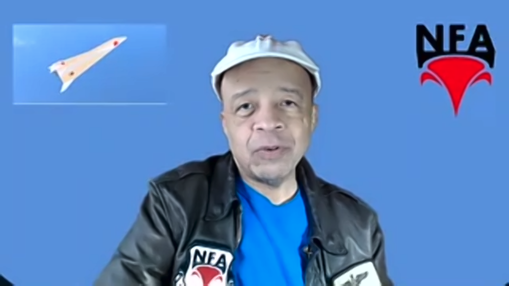
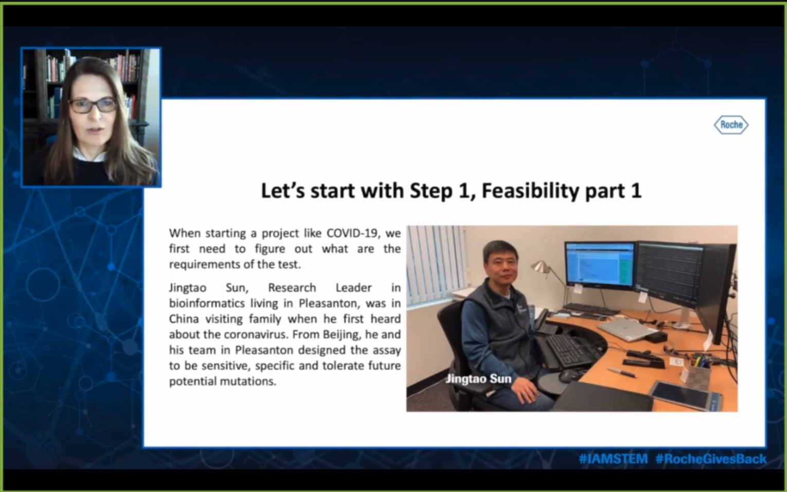
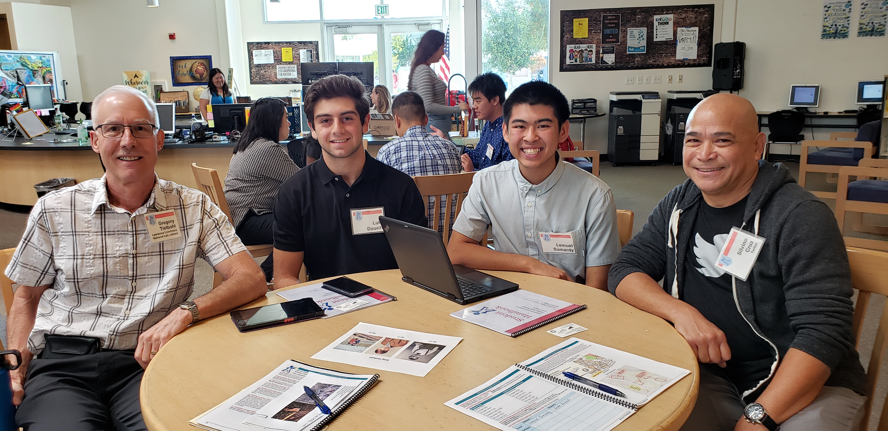

CAREER GOAL
Be in a fun and pleasant professional community, where I’ll be able to passionately work and use my skills in the electrical engineering
and computer science field
EDUCATION
- Dublin High School, Dublin - High School Diploma in Progress
August 2017 - Present
Relevant Classes
- Principles of Engineering - exposure to all types of engineering
- Drawing 1 - development of drawing skills to efficiently illustrate ideas
- Computer Science Principles - Basics of computer science
EXPERIENCE
Odyssey of the Mind, Fremont - Assistant Coach
November 2017 - March 2020
- Use hardware tools and machinery for children when appropriate for them not to use
- Assist and Coach students on how to become more creative
- Help develop the skills needed to make skits, props, and other items
Bay Badminton Center, San Francisco - Assistant Coach
May 2018 - March 2020
- Coached students to develop their skills and passions in sports
- Enjoyed assisting people when help was needed
SKILLS
- Experience in leading teams ranging from 5-7 people
- Drawing and design with Clip Studio Paint
- 3D Modeling with Autodesk Inventor and Maya
- Basic knowledge of HTML, CSS and Python
HIGHLIGHTS & AWARDS
- Competing in the Odyssey of the Mind World Tournament three times
- Varsity Badminton officer/captain
HOBBIES & INTERESTS
- Making random items and projects
Open my resume at another page
here
Work Experience
As a highschooler the most "work" experience I can get is going to field trips and hearing guest speakers talk about their own work experience. These opportunites let me hear about their stories and get an idea of what I will want to do in the future. The engineering academy has also given me the opportunity to partcipate in its mentor program and has allowed me to gain some first hand knowledge from those directly involved in the work force.
My first field trip was to the Patriot Jet Team Foundation with the Engineering Academy in Dublin High. It was inspiring to meet and talk to veteran aircraft engineers and pilots that were so passionate about their career. The mixture of stories, lessons and exploration allowed me to learn the basic science of how jets work and see a handful of working jets. My favorite part of this was being to try out the flight simulators they had available and attempting to fly the plane over my school.
My second field trip was visiting the East Dublin Bart Station and then the Workday campus. At Bart, I was able to hear what it was like to be one of the engineers that maintained the trains. They had to work during the night because the trains were running during the day. Inside of Workday, I listened to a presentation of one of the projects Workday was working on which aimed at making a centralized portal for schools that needed their system updated. After that, we took a tour of the campus and was able to eat the food they had available in their kitchen.
The third field trip was a tour of the Lawrence Livermore National Lab's NIF laser. The goal of this facility was to reproduce nuclear fusion reactions that wouldn't be attainable via other means. In this tour, one of the mentors that worked on the laser guided us through the facility and talked about the process of how it was made and how the laser actually worked. To sum it up, a bunch of lasers were reflected miles long into a singular point to achieve the temperature they wanted.
The fourth, fifth and sixth field trips were all during the pandemic and thus were online. The first of these was a virtual Salesforce Job Shadow, where numerous employees from all over the globe talked about what work was like with everything online. The people that spoke were mostly preparing for when the pandemic would end and the employees would be able to come back into the offices. The second of this was a tour of Livermore Aviation, where numerous groups that were located at the airport talked about their experiences and events that they had. Some of these speakers were from the police, a makerspace, and the airport itself. The final fieldtrip was a Career Day from Roche. In this career day, we had people speak about their experiences producing different products for the company and watched a video about COVID-19 and what they were doing regarding it.


One of the influential speakers that really spoke to me was a group from an engineering firm that focused heavily on material engineering. These speakers communicated clearly on what was expected inside of their career. It was fascinating to learn different techniques and machines for how foundations are created for building and how materials are selected and tested for different projects.
Another influential speaker that really spoke to me was one that focused on machine learning and artifical intelligence. During this talk, we went in depth on how machine learning actually worked and got to see some of the projects that the presenter worked on. This included chatbots that were able to talk to each other and a spider-like robot that learned how to walk on its own.
The mentor program that I have been partaking in with the Engineering Academy in Dublin High School has given me so much knowledge and experience that I would have never learned about outside of school. I've learned about interviewing skills and tips, like the star method, what to expect inside of college and what it's actually like working for different companies. It's been so interesting being able to hear from the wide range of backgrounds that all the mentors came from.
